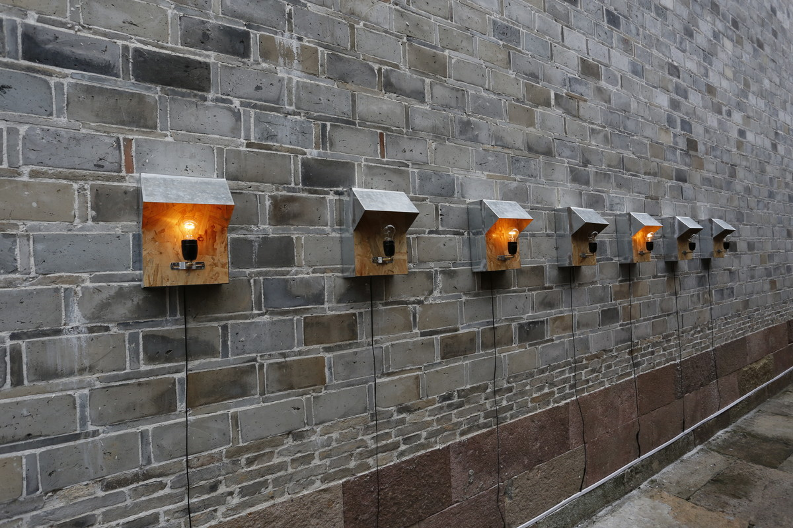
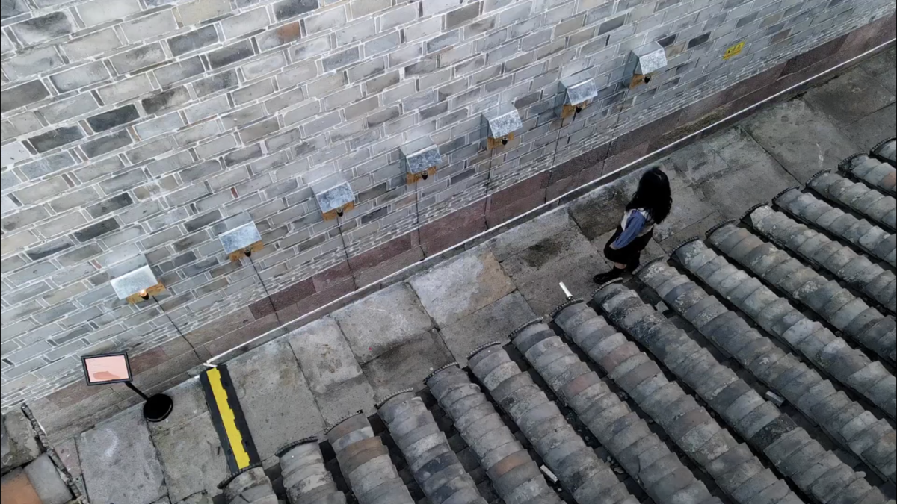
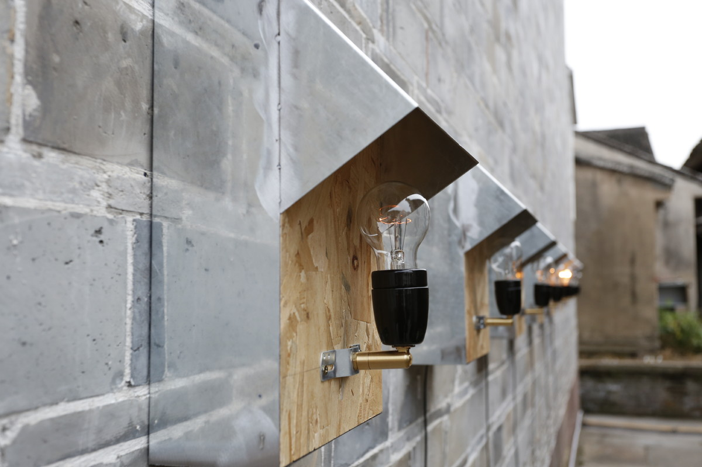
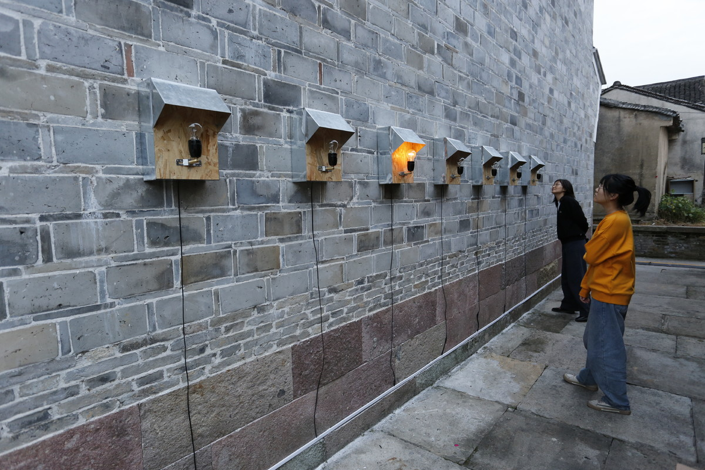

街角物语 | TIN LOVE

灯泡、单片机、电线 、白铁皮、胶合板等，尺寸为30x40x6cmx7，2020
lamp bulb, single-chip microprocessor, cable, galvanized iron sheet, plywood, ctc. 30x40x6cmx7, 2020
《街角物语》又名TIN LOVE（白铁皮的爱情），将当地收集来的7个中年人初恋的秘密，转换成莫斯电码，通过白炽灯泡在街口巷角闪烁出来。
The Story at the Corner is also called as the Tin Love. It covers the first love secrets of 7 middle-aged persons collected into the specific Morse codes. And then, the incandescent lamp flickers by referring to the Morse codes at the corner.

第六届国际跨媒体艺术节，韩岭，宁波
The 6th intermedia Art Festival, Hanling, Ningbo

第六届国际跨媒体艺术节，韩岭，宁波
The 6th intermedia Art Festival, Hanling, Ningbo

第六届国际跨媒体艺术节，韩岭，宁波
The 6th intermedia Art Festival, Hanling, Ningbo